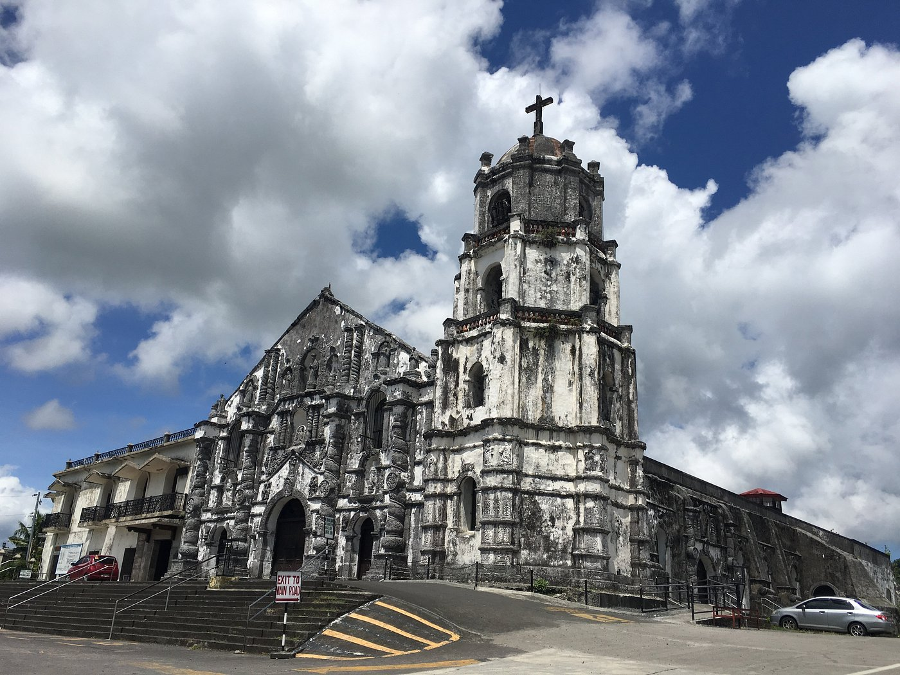
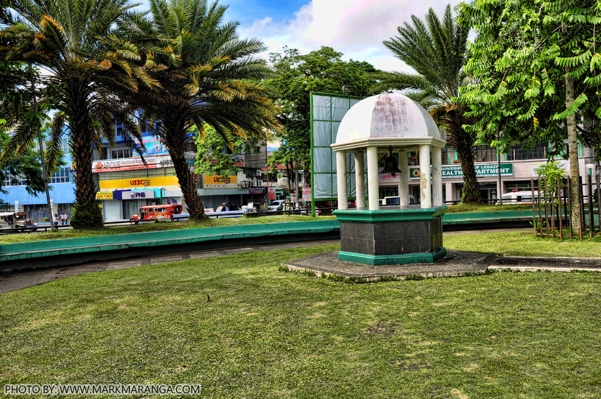
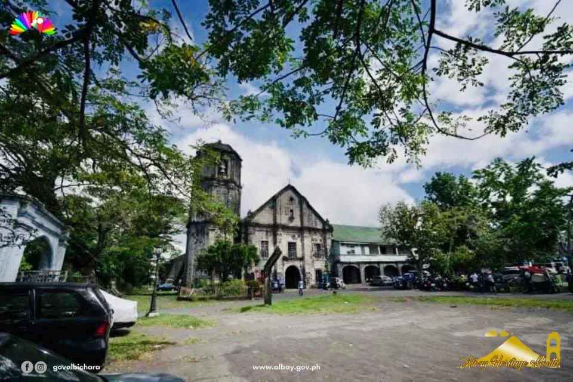

Cagsawa Ruins
One of the most famous historical sites in Albay, Cagsawa Ruins is a reminder of the 1814 eruption of Mayon Volcano.

Daraga Church
Daraga Church is a historic church known for its old architecture and beautiful location overlooking the town.

Liberty Bell
The Liberty Bell in Albay is a local landmark connected to the province’s historical identity and community pride.

Old Heritage Areas
Several towns in Albay have old structures and heritage areas that reflect the province’s history and traditional architecture.